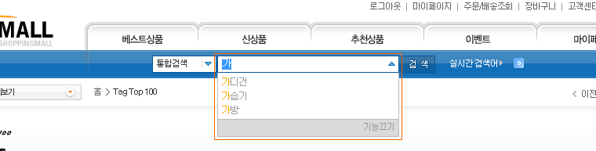

자동완성검색어관리
자동완성검색어 리스트를 확인 하거나 검색할 수 있습니다.
검색어를 클릭 하시면 수정 할 수 있습니다.
출력순위가 높을 수록 상단에 나타납니다.
자동완성 검색어란?
자동완성 검색어는 사용자의 검색 편의를 위해 검색창에 입력되는 검색어의 유형을 분석하여 많은 수의 사용자가 자주 찾는 검색어로 자동 완성해주는 서비스입니다. 한글의 입력 특성을 살려 사용자가 입력하는 단어를 포함하는 검색어를 좌측부터 자소 단위로 제공해 드립니다
